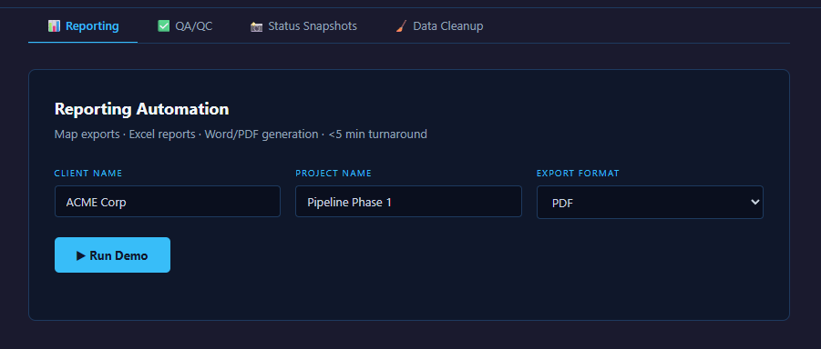

Reporting
Generates map exports, Excel reports, and document deliverables from consistent inputs.
GIS · Automation · QA
Fourteen production ArcPy scripts, coordinated through a single configuration, for repeatable reporting, QA/QC, data cleanup, and status operations.

Recurring GIS deliverables and validation checks were scattered across one-off scripts, making fixes hard to apply consistently and slowing operations.
The solutionA config-driven suite unifies reporting, map exports, QA/QC, snapshots, and data cleanup so the same rules run reliably across every job.
Capabilities
Generates map exports, Excel reports, and document deliverables from consistent inputs.
Runs validation checks across feature classes to surface geometry and attribute issues early.
Creates repeatable progress views for project teams and leadership.
Standardizes fields, repairs geometry, and finds duplicate records at scale.